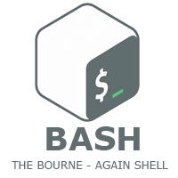

Curriculum Vitae
GINOUX Maxence
informations personnelles
29 ans
5 rue Edouard Rastoin
ginmaxence@gmail.com
06.63.61.01.55
permis B
langues : français et anglais
Objectif personnelle
En tant que débutant en informatique, je m'engage à acquérir une expertise technique solide, à contribuer à des projets innovants, et à apprendre en permanence pour rester à jour avec les dernières technologies. Mon objectif est de travailler efficacement en équipe, relever des défis complexes, et établir une réputation professionnelle fondée sur l'intégrité et la qualité du travail.
Expériences professionnelles
- 02/2020 YOJ restaurant, Marseille - manager
ouverture/fermeture caisse, encaissement, gestion du personnel, gestion des différents points de vente (restaurant, boutique), planning, gestion des conflits, en charge de toutes commandes auprès des fournisseurs, bon déroulements du service, forte fréquentation (200/clients par jour en moyenne),
- 06/2019 - 01/2020 Douce France, Sydney (Australie) - cuisinier
- 02/2017 - 02/2019 YOJ restaurant, Marseille - serveur puis manager
- 10/2016 - 01/2017 Sport Beach bar & restaurant, Marseille - barman
- 06/2016 - 09/2016 Restaurant Christian Etienne, Avignon 1* guide Michelin - chef de rang
- 07/2015 - 01/2016 Hannibal restaurant, Sydney (Australie) - Chef de rang
- 04/05/2015 - 31/05/2015 Wollaton pub & kitchen, Nottingham (Angleterre) - Barman
- 09/2014 - 09/2015 Pullman 4*, Marseille - Barman
- 09/2012 - 09/2014 l'Auberge de Cassagne 5*, Avignon - chef de rang
Vos études/formations
- 2014/2015 - Mention Complémentaire Barman, École hôtelière d’Avignon
- 2012/2014 - CAP restaurant, École hôtelière d’Avignon
- 2012 - BAC STI génie électrotechnique
Mes compétences
